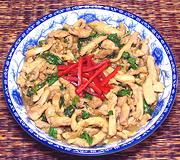

|
Chicken with Holy Basil & ChilisThailand - Gkai Pad Gkaprow | ||||
| Serves: Effort: Sched: DoAhead: |
2 main ** 35 min Part |
This dish is very popular in Thailand where it may also be made with Pork, Beef, Squid or Shrimp (and of course the name will change with the ingredient). See the notes section for hints. | |||
|
14 2 5 6 2 1/2 ----- 1 1 3 1/2 ----- 2 |
oz oz cl c --- T T T t --- T |
Chicken (1) Shallots Garlic Thai Chili (2) Kaffir Lime leaf (3) Holy Basil (4) -- Sauce Soy Sauce (5) Fish Sauce (6) Stock Salt ----------- Oil |
Prep - (20 min)
|